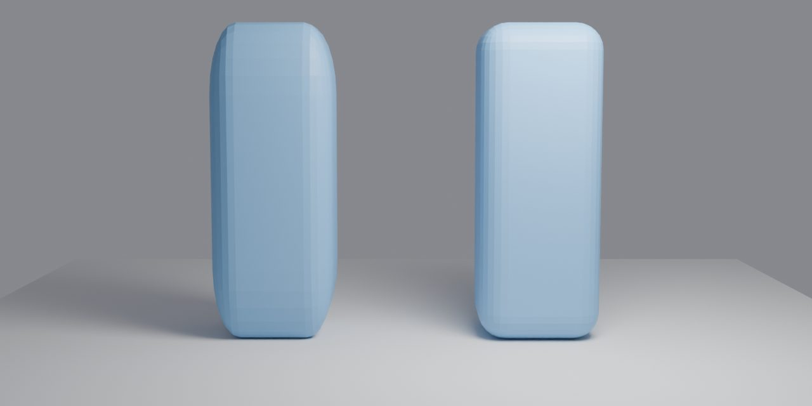

Bonus lesson
Apply Scale
When you scale an object in Object Mode, Blender keeps the mesh the same and stores a Scale value instead. Some tools and modifiers work in the object's own space, so a Scale that is not 1 can surprise you. Apply Scale fixes that.
1. See the problem
Add a cube with Shift + A and press S, Z, 2.6, Enter to stretch it upward. Open the Object tab in Properties: the Scale Z field now shows 2.6. Add a Bevel modifier (Lesson 7) with a large Width. The bevel is calculated before the object's Scale is applied, so it is stretched along Z as well.
2. Apply the scale
Make sure the object is selected, then open Object > Apply > Scale. The shortcut is Ctrl + A in the Viewport, which opens the Apply menu. The object looks the same, but its Scale is now 1 and the new size is stored in the mesh itself.

What the manual says
The Blender manual says applying transforms moves the values into the object data and resets scale to 1, and that you will not see a difference in the viewport for simple cases, but modifiers and constraints may depend on the object transformation. Read the manual page on Apply. If the object shares its mesh with other objects, Blender asks you to make it a single user first.
When to use it
Apply Scale after you finish scaling an object and before you add modifiers such as Bevel or Solidify. Our mug exercise in Lesson 8 scales the body on Z, so try Apply Scale there before you change the modifiers.
Exercise
Make two cubes, stretch both with S, Z, 2.6, apply the scale on one of them, add the same Bevel to both and render. Compare the corners.